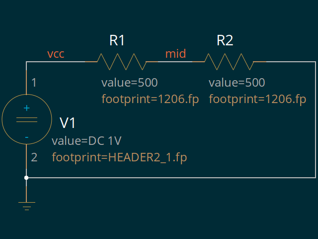

Schematics
- simple - a simple schematic
- hier - a simple hierarchical schematic
- symversion - test handling of symversion changes
simple
simple schematic for testing
lepton-netlist(1)
[ download ]
- archive contains simple.sch and simple.symembedded.sch (with embedded symbols)
simple.sch:

hier
simple hierarchical set of schematics for testing
lepton-netlist(1)
[ download ]
main.sch:
subcircuit.sch:

project hierarchy:

files:
gafrc [ download ]
geda.conf
lepton.conf
symversion
schematic to test handling of symversion changes
[ download ]